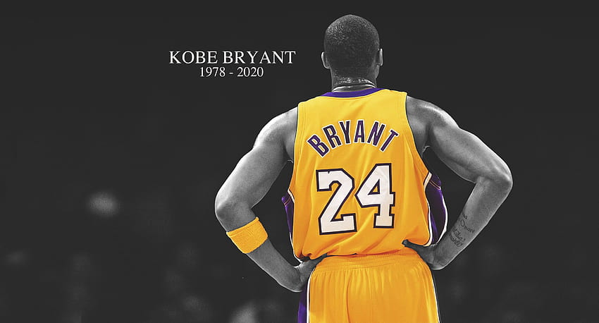

Kobe BRYANT
Kobe Bryant,né le 23 août 1978 à Philadelphie en Pennsylvanie et mort le 26 janvier 2020 à Calabasas en Californie, est un joueur américain de basket-ball. Il évolue dans la franchise NBA des Lakers de Los Angeles pendant vingt saisons, entre 1996 et 2016. Quintuple champion NBA, il est l'un des sept joueurs à avoir inscrit plus de 30 000 points en carrière2. Il est également double champion olympique avec l'équipe des États-Unis, en 2008 et en 2012.

La mentalité Mamba est un état d'esprit qui met l'accent sur les efforts incessants, l'amélioration continue et un dévouement inébranlable à atteindre son objectif. Il est associé à Kobe Bryant et implique l'intrépidité, le dépassement des obstacles, la concentration sur le processus et l'effort pour être meilleur chaque jour.
- Joue au basket-ball
- être avec la famille
- draft 1996 de la NBA
- 1997 Il gagne le Slam Dunk Contest du NBA All-Star Game
- Kobe Bryant bat son record de points en carrière ce 22 janvier 2006 avec 81 points lors de la victoire de son équipe face à Toronto (122-104). C'est la deuxième meilleure performance de l'histoire de la NBA sur un match
- MVP du NBA All-Star Game 2011
- Dernier tour d'honneur et retraite (2015-2016)
| Langue parlé | Trophées | Nombres |
|---|---|---|
| Italien | National | 5 |
| Anglais | International | 2 |
| Total | 7 |